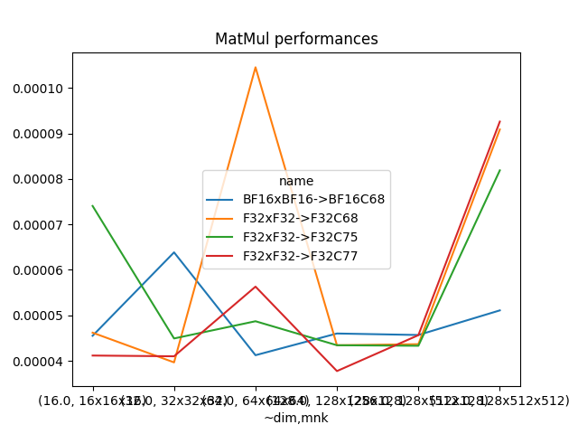
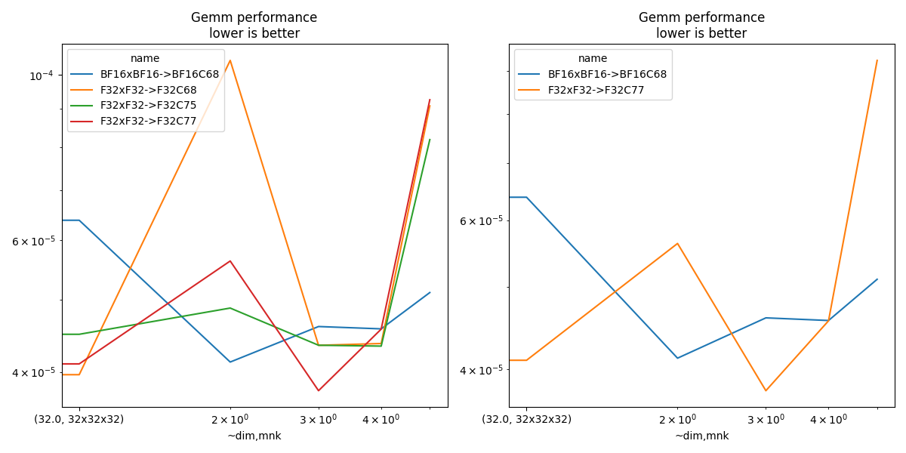

Note
Go to the end to download the full example code.
Measuring Gemm performance with different input and output tests¶
This benchmark looks into various combinations allowed by functions cublasLtMatmul. The tested configurations are available at cuda_gemm.cu.
import pprint
import warnings
from itertools import product
from tqdm import tqdm
import matplotlib.pyplot as plt
from pandas import DataFrame
from onnx_extended.args import get_parsed_args
from onnx_extended.ext_test_case import unit_test_going
try:
from onnx_extended.validation.cuda.cuda_example_py import (
gemm_benchmark_test,
get_device_prop,
)
has_cuda = True
except ImportError:
# CUDA not available.
has_cuda = False
gemm_benchmark_test = None
if has_cuda:
prop = get_device_prop()
if prop["major"] <= 0:
# No CUDA.
dtests, ddims = "", ""
elif prop["major"] < 7:
# No float 8.
dtests, ddims = "0,1,2,3,4,15", "16,32,64,64x128x92"
elif prop["major"] < 9: # T100, A100
# No float 8.
dtests, ddims = (
"0,1,2,3,4,15",
"16,32,64,128,128x128x128,128x512x128,128x512x512",
)
else:
dtests, ddims = (
"0,1,2,3,4,5,6,7,11,14,15",
"16,32,64,128,256,512,1024,2048,4096,8192,16384,"
"128x768x768,128x3072x768,128x768x3072",
)
else:
dtests, ddims = "", ""
script_args = get_parsed_args(
"plot_bench_gemm_f8",
description=__doc__,
dims=(
"16,32" if unit_test_going() else ddims,
"square matrix dimensions to try, comma separated values",
),
tests=(
"0,1,2" if unit_test_going() else dtests,
"configuration to check, see cuda_gemm.cu",
),
warmup=2 if unit_test_going() else 5,
repeat=2 if unit_test_going() else 10,
expose="repeat,warmup",
)
Device¶
if has_cuda:
prop = get_device_prop()
pprint.pprint(prop)
else:
print("CUDA is not available")
prop = dict(major=0)
{'clockRate': 2010000,
'computeMode': 0,
'concurrentKernels': 1,
'isMultiGpuBoard': 0,
'major': 8,
'maxThreadsPerBlock': 1024,
'minor': 9,
'multiProcessorCount': 24,
'name': 'NVIDIA GeForce RTX 4060 Laptop GPU',
'sharedMemPerBlock': 49152,
'totalConstMem': 65536,
'totalGlobalMem': 8585281536}
Benchmark¶
def type2string(dt):
dtests = {
0: "F32",
2: "F16",
14: "BF16",
28: "E4M3",
29: "E5M2",
3: "I8",
10: "I32",
}
return dtests[int(dt)]
dims = []
tests = []
if gemm_benchmark_test is not None:
for d in script_args.dims.split(","):
if "x" in d:
spl = d.split("x")
m, n, k = tuple(int(i) for i in spl)
dims.append((m, n, k))
else:
dims.append(int(d))
tests = [int(i) for i in script_args.tests.split(",")]
pbar = tqdm(list(product(tests, dims)))
obs = []
for test, dim in pbar:
pbar.set_description(f"type={test} dim={dim}")
if test in {8, 9, 10, 12, 13}:
warnings.warn(f"unsupported configuration {test}.", stacklevel=0)
continue
mdim = dim if isinstance(dim, int) else max(dim)
if mdim < 128:
n, N = script_args.warmup * 8, script_args.repeat * 8
elif mdim < 512:
n, N = script_args.warmup * 4, script_args.repeat * 4
elif mdim < 8192:
n, N = script_args.warmup * 2, script_args.repeat * 2
else:
n, N = script_args.warmup, script_args.repeat
if isinstance(dim, int):
gemm_args = [dim] * 6
else:
m, n, k = dim
lda, ldb, ldd = k, k, k
gemm_args = [m, n, k, lda, ldb, ldd]
# warmup
try:
gemm_benchmark_test(test, N, *gemm_args)
except RuntimeError:
# Not working.
continue
# benchmark
res = gemm_benchmark_test(test, N, *gemm_args)
# better rendering
res["test"] = test
update = {}
for k, v in res.items():
if "type_" in k:
update[k] = type2string(v)
if k.startswith("t-"):
update[k] = res[k] / res["N"]
update["compute_type"] = f"C{int(res['compute_type'])}"
for c in ["N", "m", "n", "k", "lda", "ldb", "ldd"]:
update[c] = int(res[c])
update["~dim"] = (update["k"] * max(update["m"], update["n"])) ** 0.5
update["mnk"] = f"{update['m']}x{update['n']}x{update['k']}"
update["name"] = (
f"{update['type_a']}x{update['type_b']}->"
f"{update['type_d']}{update['compute_type']}"
)
res.update(update)
obs.append(res)
if unit_test_going() and len(obs) > 2:
break
df = DataFrame(obs)
df.to_csv("plot_bench_gemm_f8.csv", index=False)
df.to_excel("plot_bench_gemm_f8.xlsx", index=False)
print(df.head().T)
df.head().T
0%| | 0/42 [00:00<?, ?it/s]
type=0 dim=16: 0%| | 0/42 [00:00<?, ?it/s]
type=0 dim=16: 2%|â | 1/42 [00:00<00:19, 2.13it/s]
type=0 dim=32: 2%|â | 1/42 [00:00<00:19, 2.13it/s]
type=0 dim=64: 2%|â | 1/42 [00:00<00:19, 2.13it/s]
type=0 dim=128: 2%|â | 1/42 [00:00<00:19, 2.13it/s]
type=0 dim=(128, 128, 128): 2%|â | 1/42 [00:00<00:19, 2.13it/s]
type=0 dim=(128, 512, 128): 2%|â | 1/42 [00:00<00:19, 2.13it/s]
type=0 dim=(128, 512, 512): 2%|â | 1/42 [00:00<00:19, 2.13it/s]
type=1 dim=16: 2%|â | 1/42 [00:00<00:19, 2.13it/s]
type=1 dim=16: 19%|ââ | 8/42 [00:00<00:01, 17.47it/s]
type=1 dim=32: 19%|ââ | 8/42 [00:00<00:01, 17.47it/s]
type=1 dim=64: 19%|ââ | 8/42 [00:00<00:01, 17.47it/s]
type=1 dim=128: 19%|ââ | 8/42 [00:00<00:01, 17.47it/s]
type=1 dim=(128, 128, 128): 19%|ââ | 8/42 [00:00<00:01, 17.47it/s]
type=1 dim=(128, 512, 128): 19%|ââ | 8/42 [00:00<00:01, 17.47it/s]
type=1 dim=(128, 512, 512): 19%|ââ | 8/42 [00:00<00:01, 17.47it/s]
type=2 dim=16: 19%|ââ | 8/42 [00:00<00:01, 17.47it/s]
type=2 dim=32: 19%|ââ | 8/42 [00:00<00:01, 17.47it/s]
type=2 dim=32: 38%|ââââ | 16/42 [00:00<00:00, 32.73it/s]
type=2 dim=64: 38%|ââââ | 16/42 [00:00<00:00, 32.73it/s]
type=2 dim=128: 38%|ââââ | 16/42 [00:00<00:00, 32.73it/s]
type=2 dim=(128, 128, 128): 38%|ââââ | 16/42 [00:00<00:00, 32.73it/s]
type=2 dim=(128, 512, 128): 38%|ââââ | 16/42 [00:00<00:00, 32.73it/s]
type=2 dim=(128, 512, 512): 38%|ââââ | 16/42 [00:00<00:00, 32.73it/s]
type=3 dim=16: 38%|ââââ | 16/42 [00:00<00:00, 32.73it/s]
type=3 dim=32: 38%|ââââ | 16/42 [00:00<00:00, 32.73it/s]
type=3 dim=64: 38%|ââââ | 16/42 [00:00<00:00, 32.73it/s]
type=3 dim=128: 38%|ââââ | 16/42 [00:00<00:00, 32.73it/s]
type=3 dim=(128, 128, 128): 38%|ââââ | 16/42 [00:00<00:00, 32.73it/s]
type=3 dim=(128, 512, 128): 38%|ââââ | 16/42 [00:00<00:00, 32.73it/s]
type=3 dim=(128, 512, 512): 38%|ââââ | 16/42 [00:00<00:00, 32.73it/s]
type=4 dim=16: 38%|ââââ | 16/42 [00:00<00:00, 32.73it/s]
type=4 dim=16: 69%|âââââââ | 29/42 [00:01<00:00, 36.20it/s]
type=4 dim=32: 69%|âââââââ | 29/42 [00:01<00:00, 36.20it/s]
type=4 dim=64: 69%|âââââââ | 29/42 [00:01<00:00, 36.20it/s]
type=4 dim=128: 69%|âââââââ | 29/42 [00:01<00:00, 36.20it/s]
type=4 dim=(128, 128, 128): 69%|âââââââ | 29/42 [00:01<00:00, 36.20it/s]
type=4 dim=(128, 512, 128): 69%|âââââââ | 29/42 [00:01<00:00, 36.20it/s]
type=4 dim=(128, 512, 512): 69%|âââââââ | 29/42 [00:01<00:00, 36.20it/s]
type=15 dim=16: 69%|âââââââ | 29/42 [00:01<00:00, 36.20it/s]
type=15 dim=32: 69%|âââââââ | 29/42 [00:01<00:00, 36.20it/s]
type=15 dim=64: 69%|âââââââ | 29/42 [00:01<00:00, 36.20it/s]
type=15 dim=128: 69%|âââââââ | 29/42 [00:01<00:00, 36.20it/s]
type=15 dim=(128, 128, 128): 69%|âââââââ | 29/42 [00:01<00:00, 36.20it/s]
type=15 dim=(128, 512, 128): 69%|âââââââ | 29/42 [00:01<00:00, 36.20it/s]
type=15 dim=(128, 512, 512): 69%|âââââââ | 29/42 [00:01<00:00, 36.20it/s]
type=15 dim=(128, 512, 512): 100%|ââââââââââ| 42/42 [00:01<00:00, 37.94it/s]
0 1 2 3 4
t-total 0.000056 0.000045 0.000111 0.000052 0.000048
t-clean 0.0 0.0 0.0 0.0 0.0
t-gemm_in 0.000014 0.000011 0.000014 0.000011 0.000009
t-setup 0.000003 0.000002 0.000002 0.000002 0.000002
t-stream_create 0.0 0.0 0.0 0.0 0.0
N 80 80 80 40 40
epiloque 1.0 1.0 1.0 1.0 1.0
ldd 16 32 64 128 128
t-workspace_free 0.000003 0.000002 0.000002 0.000002 0.000002
algo 11.0 1.0 1.0 1.0 1.0
t-gemm_sync 0.000046 0.00004 0.000105 0.000046 0.000041
t-stream_destroy 0.000002 0.000001 0.000001 0.000001 0.000001
workspace_size 1048576.0 1048576.0 1048576.0 1048576.0 1048576.0
m 16 32 64 128 128
k 16 32 64 128 128
n 16 32 64 128 128
compute_type C68 C68 C68 C68 C68
lda 16 32 64 128 128
type_a F32 F32 F32 F32 F32
ldb 16 32 64 128 128
t-gemm 0.000017 0.000013 0.000017 0.000013 0.000011
type_b F32 F32 F32 F32 F32
t-workspace_new 0.000003 0.000002 0.000002 0.000002 0.000002
type_d F32 F32 F32 F32 F32
test 0 0 0 0 0
~dim 16.0 32.0 64.0 128.0 128.0
mnk 16x16x16 32x32x32 64x64x64 128x128x128 128x128x128
name F32xF32->F32C68 F32xF32->F32C68 F32xF32->F32C68 F32xF32->F32C68 F32xF32->F32C68
Test definition¶
name test type_a type_b type_d compute_type
0 BF16xBF16->BF16C68 4 BF16 BF16 BF16 C68
1 F32xF32->F32C68 0 F32 F32 F32 C68
2 F32xF32->F32C75 2 F32 F32 F32 C75
3 F32xF32->F32C77 1 F32 F32 F32 C77
Total time and only gemm¶
name test type_a type_b type_d compute_type ~dim mnk t-total t-gemm_sync
0 F32xF32->F32C68 0 F32 F32 F32 C68 16.0 16x16x16 0.000056 0.000046
1 F32xF32->F32C68 0 F32 F32 F32 C68 32.0 32x32x32 0.000045 0.000040
2 F32xF32->F32C68 0 F32 F32 F32 C68 64.0 64x64x64 0.000111 0.000105
3 F32xF32->F32C68 0 F32 F32 F32 C68 128.0 128x128x128 0.000052 0.000046
4 F32xF32->F32C68 0 F32 F32 F32 C68 128.0 128x128x128 0.000048 0.000041
5 F32xF32->F32C68 0 F32 F32 F32 C68 256.0 128x512x128 0.000049 0.000044
6 F32xF32->F32C68 0 F32 F32 F32 C68 512.0 128x512x512 0.000603 0.000091
7 F32xF32->F32C77 1 F32 F32 F32 C77 16.0 16x16x16 0.000047 0.000041
8 F32xF32->F32C77 1 F32 F32 F32 C77 32.0 32x32x32 0.000046 0.000041
9 F32xF32->F32C77 1 F32 F32 F32 C77 64.0 64x64x64 0.000066 0.000056
10 F32xF32->F32C77 1 F32 F32 F32 C77 128.0 128x128x128 0.000045 0.000038
11 F32xF32->F32C77 1 F32 F32 F32 C77 128.0 128x128x128 0.000042 0.000037
12 F32xF32->F32C77 1 F32 F32 F32 C77 256.0 128x512x128 0.000053 0.000046
13 F32xF32->F32C77 1 F32 F32 F32 C77 512.0 128x512x512 0.000638 0.000093
14 F32xF32->F32C75 2 F32 F32 F32 C75 16.0 16x16x16 0.000083 0.000074
15 F32xF32->F32C75 2 F32 F32 F32 C75 32.0 32x32x32 0.000051 0.000045
16 F32xF32->F32C75 2 F32 F32 F32 C75 64.0 64x64x64 0.000055 0.000049
17 F32xF32->F32C75 2 F32 F32 F32 C75 128.0 128x128x128 0.000050 0.000043
18 F32xF32->F32C75 2 F32 F32 F32 C75 128.0 128x128x128 0.000050 0.000044
19 F32xF32->F32C75 2 F32 F32 F32 C75 256.0 128x512x128 0.000050 0.000043
20 F32xF32->F32C75 2 F32 F32 F32 C75 512.0 128x512x512 0.000608 0.000082
21 BF16xBF16->BF16C68 4 BF16 BF16 BF16 C68 16.0 16x16x16 0.000051 0.000046
22 BF16xBF16->BF16C68 4 BF16 BF16 BF16 C68 32.0 32x32x32 0.000080 0.000064
23 BF16xBF16->BF16C68 4 BF16 BF16 BF16 C68 64.0 64x64x64 0.000047 0.000041
24 BF16xBF16->BF16C68 4 BF16 BF16 BF16 C68 128.0 128x128x128 0.000062 0.000046
25 BF16xBF16->BF16C68 4 BF16 BF16 BF16 C68 128.0 128x128x128 0.000052 0.000046
26 BF16xBF16->BF16C68 4 BF16 BF16 BF16 C68 256.0 128x512x128 0.000052 0.000046
27 BF16xBF16->BF16C68 4 BF16 BF16 BF16 C68 512.0 128x512x512 0.000059 0.000051
Smaller sets¶
if df.shape[0] > 0:
subset = {1, 3, 4, 5, 7}
dfis = dfi[dfi.test.isin(subset)]
print()
print("t-gemm_sync")
pivi = dfis.pivot_table(index=["~dim", "mnk"], columns="name", values="t-gemm_sync")
print(pivi)
print()
print("t-total")
pivi = dfis.pivot_table(index=["~dim", "mnk"], columns="name", values="t-total")
print(pivi)
t-gemm_sync
name BF16xBF16->BF16C68 F32xF32->F32C77
~dim mnk
16.0 16x16x16 0.000046 0.000041
32.0 32x32x32 0.000064 0.000041
64.0 64x64x64 0.000041 0.000056
128.0 128x128x128 0.000046 0.000038
256.0 128x512x128 0.000046 0.000046
512.0 128x512x512 0.000051 0.000093
t-total
name BF16xBF16->BF16C68 F32xF32->F32C77
~dim mnk
16.0 16x16x16 0.000051 0.000047
32.0 32x32x32 0.000080 0.000046
64.0 64x64x64 0.000047 0.000066
128.0 128x128x128 0.000057 0.000043
256.0 128x512x128 0.000052 0.000053
512.0 128x512x512 0.000059 0.000638
Plots¶
if df.shape[0] > 0:
piv = df.pivot_table(index=["~dim", "mnk"], columns="name", values="t-gemm_sync")
piv.plot(title="MatMul performances")
fig, ax = plt.subplots(1, 2, figsize=(12, 6))
piv.plot(ax=ax[0], title="Gemm performance\nlower is better", logx=True, logy=True)
piv = df[df.test.isin(subset)].pivot_table(
index=["~dim", "mnk"], columns="name", values="t-gemm_sync"
)
if piv.shape[0] > 0:
piv.plot(
ax=ax[1], title="Gemm performance\nlower is better", logx=True, logy=True
)
fig.tight_layout()
fig.savefig("plot_bench_gemm_f8.png")
- 
- 
Total running time of the script: (0 minutes 2.317 seconds)